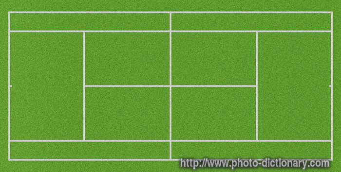

tennis news
Australian Open extreme heat policy to be reviewed as concerned players suffer.
Australian Open officials will review the extreme heat policy at the end of the tournament but insisted they take player welfare very seriously. A two-day heatwave has led to matches at Melbourne Park being played in soaring temperatures, which peaked on Friday at 40.2C (104F).But they were not deemed extreme enough for the tournament to implement its policy, which can see matches on open courts postponed and those on the show courts played with the roof closed.Novak Djokovic and Gaël Monfils both complained about the conditions they played in on Thursday. Monfils said he suffered a small heatstroke and felt he was dying on the court, while Djokovic believed the conditions were right at the limit of what was playable. Djokovic also accused the tennis industry as a whole of not caring enough about the health of players.
Rafael Nadal (Esp)
Sadly, we'll make an early reference to our tournament tennis mantra: “Health is the great variable.” At full strength, Nadal can go a set better than last year and win the title. His intermarriage of spin and power remains formidable, as we saw at the previous Slam. If Nadal is physically compromised—and sadly we hear that’s the case—all bets are off.
Grigor Dimitrov (Bul)
Dimitrov was coming off the biggest win of his career—the Cincy title—but failed to build on it at the U.S. Open. This year, he’s coming off the new biggest win of his career—the 2017 ATP World Tour Finals year-end title in London. We’ll see if there’s a catalytic effort. Possesses the full palette of shots; that we’ve long known. Does he possess the full range of emotion to survive seven rounds? Big opportunity here.
Alexander Zverev (Ger)
Watch for that Round of 16 match with a guy named Djokovic. The future has become the present, as his seeding will attest. There’s so much to like here, starting with the German pragmatism. So it is that he knows this truth: he needs to improve his play in best-of-five matches before he has full certification. His fate lies largely in his legs (and lungs) and not in his arms.
Federer's Interview
Arriving in Australia ahead of a new season, the tennis legend takes a trip to Rottnest Island and says it’s hard to imagine he’ll play as well in 2018.
Roger Federer admits he "should not be favourite" at this year's Australian Open with the five-time champion tipping Rafael Nadal and Novak Djokovic for the title. Federer returned from a lengthy injury hiatus 12 months ago to win a stunning 18th Grand Slam title in Melbourne, while this time his preparation has been virtually perfect. His rival Rafael Nadal he has not contested a match since November because of knee troubles while the fitness of six-time champion Novak Djokovic is even more uncertain after six months out with an elbow injury, but Federer said of his expectations: "It's totally different.